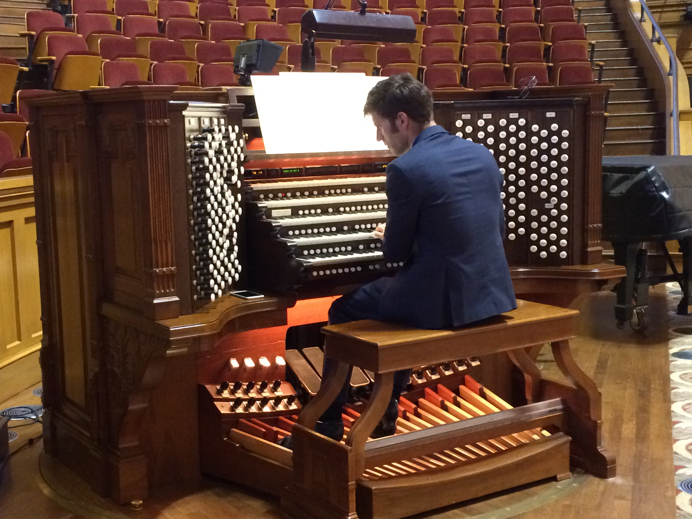

|

|
____________________ Etude no. 6, op. 5, “Octaves” by Jeanne Demessieux, live in recital 11 November 2011
____________________ Adagio in E Major by Frank Bridge, live in recital 29 March 2016
____________________ Toccata, from Suite, op. 5 by Maurice Duruflé, live in recital 29 March 2016
____________________ Grand Dialogue du 5e ton, from 3e Livre d'Orgue by Louis Marchand, live in recital 29 March 2016
____________________ Just As I Am, from Three Gospel Preludes, Book 1 by William Bolcom, live in recital 29 March 2016
____________________ Introduction und Passacaglia by Max Reger, live in recital 29 March 2016
____________________ Oh, Come, All Ye Faithful arranged by Richard Elliott, live in concert with the BYU University Chorale, Christmas 2010
____________________ |
Created by Parker E. Ludwig
© 2021 Parker Ludwig